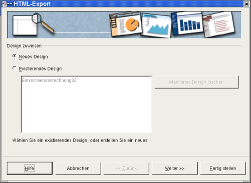
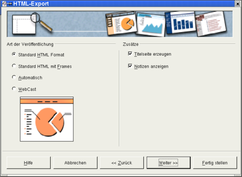
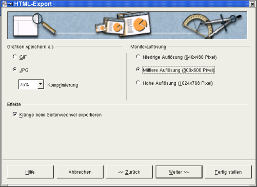
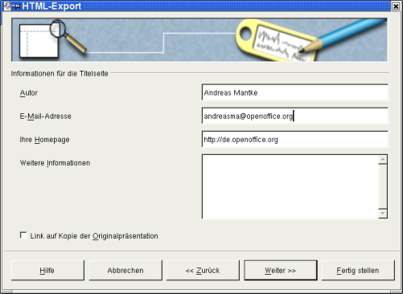
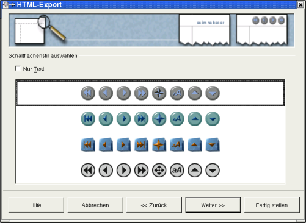
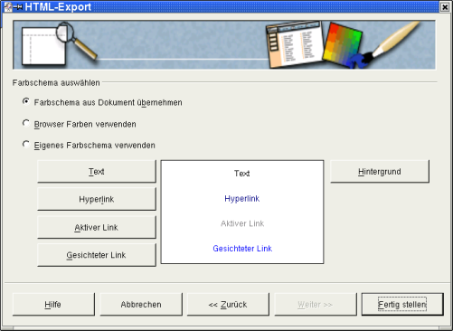
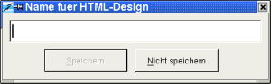
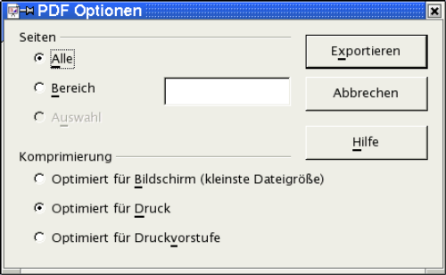

| [zurück] | [Hauptmenü] | [weiter] |
| [PDF] | ||
Export der Präsentation in HTML
Sie wollen Ihre Präsentation mit den
Techniken des Internets vorführen. Dies kann beispielsweise auch
erforderlich sein, wenn auf dem Computer, den Sie für die
Präsentation beim Kunden benutzen, kein OpenOffice.org
installiert ist.

Abbildung
1: Dialogbox: Design
Wählen Sie hierzu im Menü Datei den Unterpunkt Export. Es öffnet sich dann ein Nutzerdialog, in dem Sie einen Namen und einen Speicherort für die zu exportierende Präsentation vorgeben müssen. Als Dateiformat ist hier „Webseite“ vorbelegt. Dem von Ihnen vergebenen Dateinamen wird damit als Dateiendung „HTML“ angehängt. Wenn Sie Ihre Eingaben mit „Speichern“ bestätigen, gelangen Sie zum nächsten Dialogfenster:

Abbildung
2: Dialogbox: HTML-Einstellung
Wenn Sie diesen Dialog zum ersten Mal aufrufen,
wird Ihnen im unteren Bereich noch kein „Existierendes Design“
angeboten. Sie müssen daher ein „Neues
Design“ erstellen, auf das Sie später
zurückgreifen können. Belassen Sie daher die Voreinstellung
und bestätigen Sie den Dialog mit „Weiter“.
Sie erhalten dann folgenden Nutzerdialog:

Abbildung
3: Dialogbox: Grafik / Auflösung
Auf der linken Seite stellen Sie ein, wie Ihr
HTML-Code aussehen soll. Lassen Sie hier für's erste die
vorbelegte Einstellung stehen.
Auf der rechten Seite ermuntern Sie
OpenOffice.org dazu, eine Titelseite (Index-Datei) zu erzeugen.
Nehmen Sie das Häkchen vor „Notizen
anzeigen“ heraus. Ansonsten werden Ihre HTML-Seiten
durch einen Notizbereich „geschmückt“. Dies ist
jedoch bei der zuvor von Ihnen erstellten Präsentation nicht
sinnvoll. Bestätigen Sie Ihre Eingaben wieder mit „Weiter“
und Sie gelangen zu folgender Maske:
Dort stellen Sie ein, in welchem Format (gif oder
jpeg) Ihre Grafiken gespeichert werden sollen und wie stark sie dabei
komprimiert werden (Dies ist nur bei dem Speicherformat
*.jpeg möglich). Auf der rechten Seite geben Sie die Auflösung
für die Bildschirmdarstellung vor. Setzen Sie hier die
Einstellung auf eine„Mittlere
Auflösung“. Im unteren Bereich des Fensters
treffen Sie eine Aussage dazu, ob eventuell eingestellte Klänge
zum Seitenwechsel mit gespeichert (und
damit beim Wechsel der einzelnen HTML-Seiten abgespielt) werden
sollen. Lassen Sie das Häkchen hier stehen, falls Sie für
den Wechsel der einzelnen Präsentationsseiten
Klänge als Animationen bereits eingestellt haben. Anschließend
bestätigen Sie Ihre Eingaben wieder mit „Weiter“
und gelangen dann zum nächsten Dialog:

Abbildung
4: Dialogbox: Autor und weitere Informationen
Hier tragen Sie für die zuvor angeforderte
Titelseite Ihre persönlichen Daten und eventuell weitere
Informationen ein und gelangen im Folgenden über die
Schaltfläche „Weiter“
zum nächsten Nutzerdialog:

Abbildung
5: Dialogbox: Schaltflächen
Dort wählen Sie die Ihrem Geschmack entsprechenden Schaltflächen für Ihre HTML-Seite aus. Nehmen Sie hierzu das Häkchen vor „Nur Text“ heraus, entscheiden sich für eine der Reihen mit Schaltflächen und bestätigen Ihre Auswahl anschließend mit der Schaltfläche „Weiter“. Sie gelangen dann zur Auswahlmaske für das Farbschema Ihres Dokuments:

Abbildung
6: Dialogbox: Farbschema und Hintergrund
Belassen Sie hier die voreingestellten Werte
und benutzen Sie das Farbschema
Ihres Dokuments. Alternativ könnten Sie hier die
Einstellungen des Browsers (des Programms, mit dem Sie Internetseiten
betrachten) oder eigene Einstellungen eingeben. Wenn Sie solche
eigenen Farben vorgeben wollen, können Sie über die
Schaltflächen im unteren Bereich für „Text“,
„Hyperlink“
usw. jeweils spezielle Farben einstellen. Sie können auch die
Hintergrundfarbe Ihren Vorstellungen anpassen. Haben Sie hier Ihre
Eingaben getätigt, geht es über die Schaltfläche
„Fertig
stellen“ zur Frage, ob und unter welchem Namen Sie
Ihr erstelltes HTML-Design speichern wollen. Unter diesem Namen
werden Sie es künftig in den Auswahloptionen
für die Designs angezeigt bekommen:

Abbildung
7: Dialogbox: Name des HTML-Design
Damit haben Sie den Export der Präsentation
als HTML-Datei abgeschlossen. Sie können Ihre Präsentation
nun mit dem Browser Ihrer Wahl anschauen.
Export der Präsentation als PDF
Ab der Version 1.1 von OpenOffice.org gibt es eine neue Funktion zum direkten Speichern (Export) Ihrer Präsentation als PDF-Datei (Hierbei handelt es sich um das Portable Document Format). Sie benötigen also keine weiteren Hilfsprogramme mehr zur Erstellung einer solchen Datei, sondern erstellen Sie einfach über die Schalfläche in der Funktionsleiste.
Der andere Weg führt über das Menü Datei – Exportieren als PDF.
|
|
Dieser Weg hat den Vorteil, dass Sie im folgenden Dialog den Qualitätsstandard der zu erstellenden PDF-Datei beeinflussen können. |
Im folgenden Nutzerdialog müssen Sie den Namen für die zu erstellende Datei sowie deren Speicherort vorgeben. Bestätigen Sie Ihre Eingaben mit „Exportieren“.
Sie erhalten dann folgende Maske:

Abbildung
8: PDF-Qualitätsauswahl
Hier können Sie die zu exportierenden Seiten Ihrer Präsentation auswählen und bestimmen, in welcher Qualitätsstufe die Datei erstellt werden soll. Bestätigen Sie Ihre Entscheidung wieder mit „Exportieren“. Ihre Datei wird damit fertig gestellt.
Danksagungen
Autor: Andreas Mantke
Korrektur gelesen: Klaus Endelmann, Helga Fischer, Michael Kirchner, Michael Scheurer
Fassung: zweite
Letzte Änderung: 02.09.03